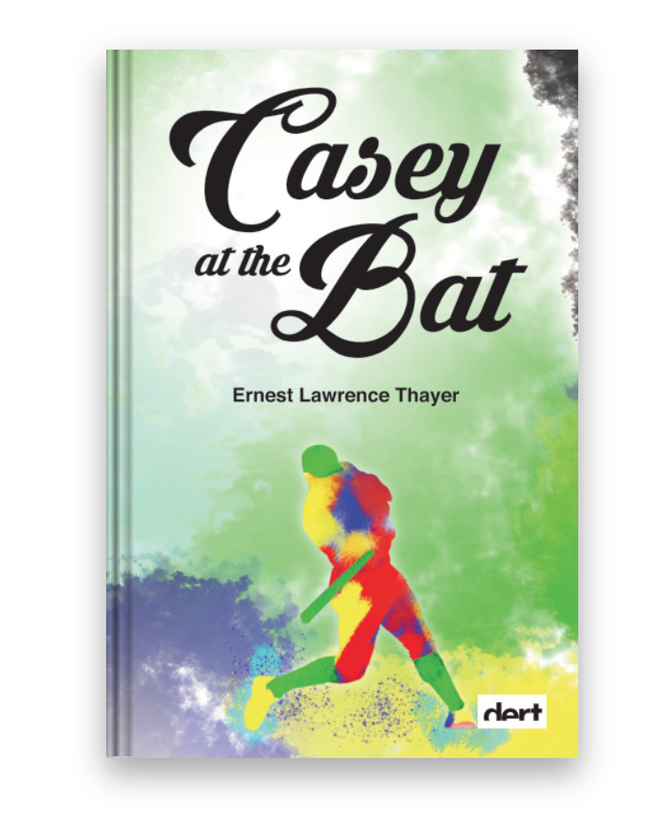
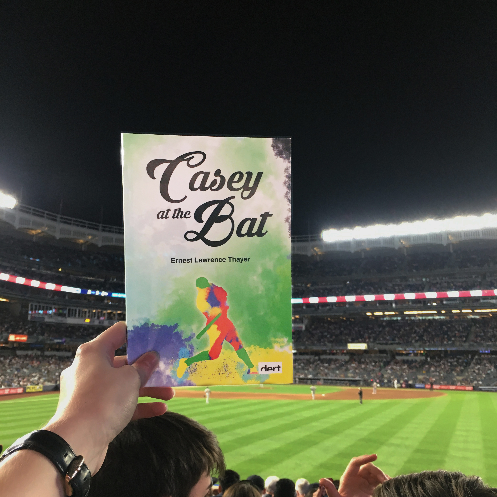
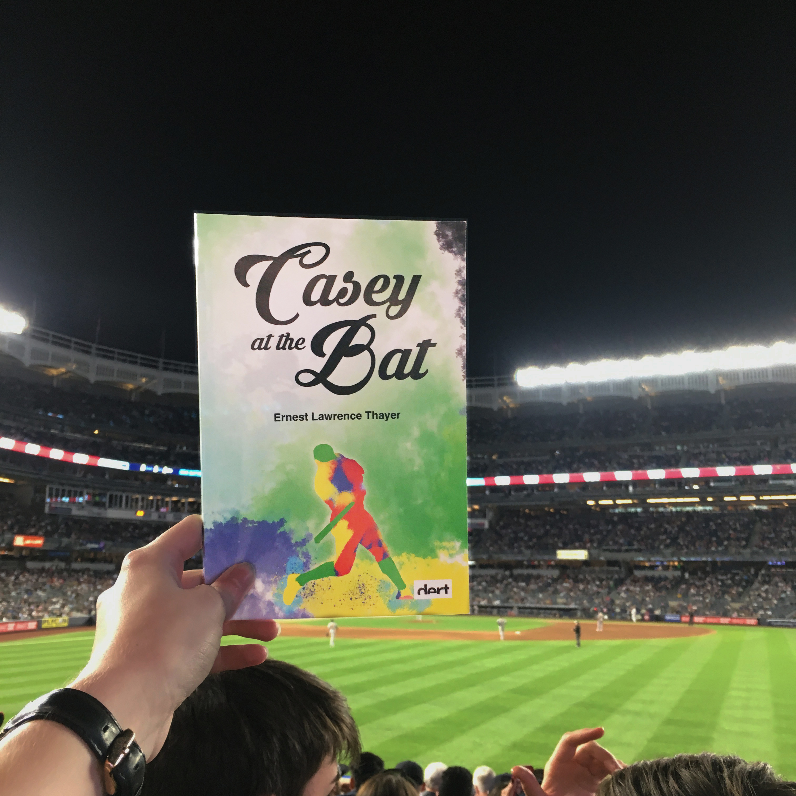

Casey at the Bat
Casey at the Bat is a famous baseball poem, originally called “Casey at the Bat: A Ballad of the Republic Sung in the Year 1888”. This book was designed in collaboration with DERT, for their DERT Spreads Literacy campaign. I illustrated this classic poem for the modern kid. Building off of the energy that builds during a baseball game, the book grows in color as the sound and energy of the game build. The artwork for this book was inspired by the work of LeRoy Neiman, who was known widely for his contemporary sports paintings.
 

- Originally written by Ernest Lawerence Thayer for The San Francisco Examiner published on June 3, 1888.